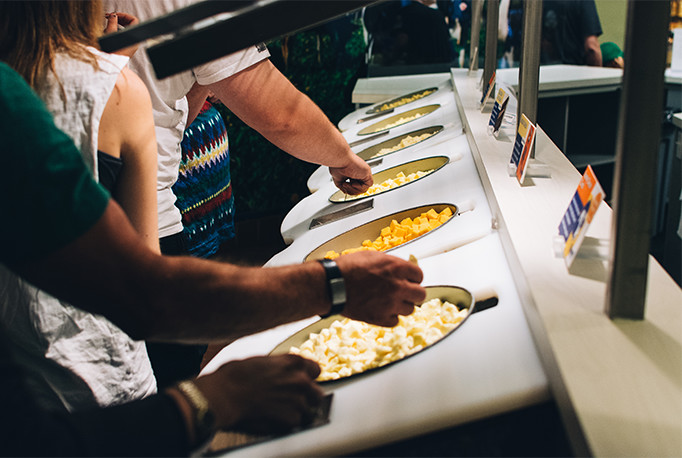

2020.11.18
チーズアカデミー8期生募集を開始しました。説明会も開催中です。

チーズ職人養成学校「チーズアカデミーTOKYO」
チーズアカデミーについて
チーズアカデミーは、チーズ職人養成学校です。
チーズの素晴らしさを、自給自足を通じて、できるだけ多くの人に知っていただきたい。
そして、食卓にはいつもチーズがあった、あの頃の当たり前をこの手で取り戻したい。
そんな思いから、チーズ職人養成学校「チーズアカデミーTOKYO」は歩みを始めています。
卒業後、チーズ自給自足のバックアップはもちろんのこと、
チーズ職人への就職・転職もサポートします。


未経験からでもスタートできる、本格的なカリキュラム

チーズアカデミーでは、本格的な農園でチーズ作りを体験できます。実際にチーズを作ることで、普段からチーズに対する興味関心が高まります。

チーズ作りの基礎知識はもちろんのこと、販売や起業に必要なノウハウまで学ぶことができます。

卒業前にはテイスティング審査があります。自分で作ったチーズの味わいを確かめ、自信を持って卒業することができます。
ニュース
2020.11.18
チーズアカデミー8期生募集を開始しました。説明会も開催中です。
2020.11.18
チーズアカデミー8期生募集を開始しました。説明会も開催中です。
2020.11.18
チーズアカデミー8期生募集を開始しました。説明会も開催中です。
会社概要
| 学校名 | チーズアカデミーTOKYO |
|---|---|
| 事務所所在地 | 〒107-0061 東京都港区北青山3-5-6 青山ビル5F |
| TEL | 03-0000-0000 |
| FAX | 03-0000-0000 |
| dummy@cheeseacademy.tokyo |
説明会お申し込み・お問い合わせ
ぜひ1度説明会にお越しください。説明会は随時開催しております。
その他、ご質問等ございましたらお気軽にお問い合わせください。